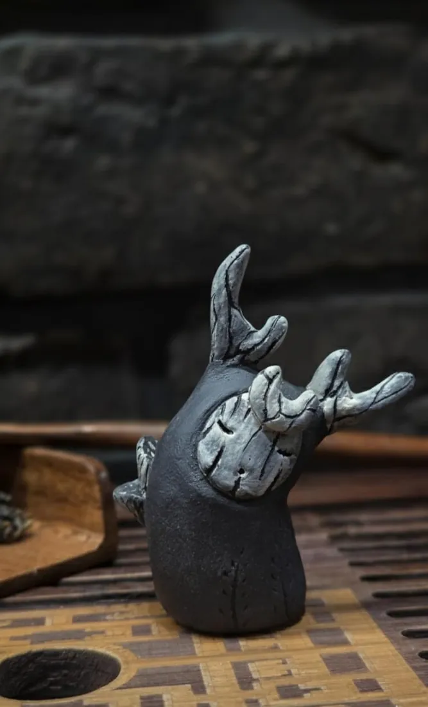
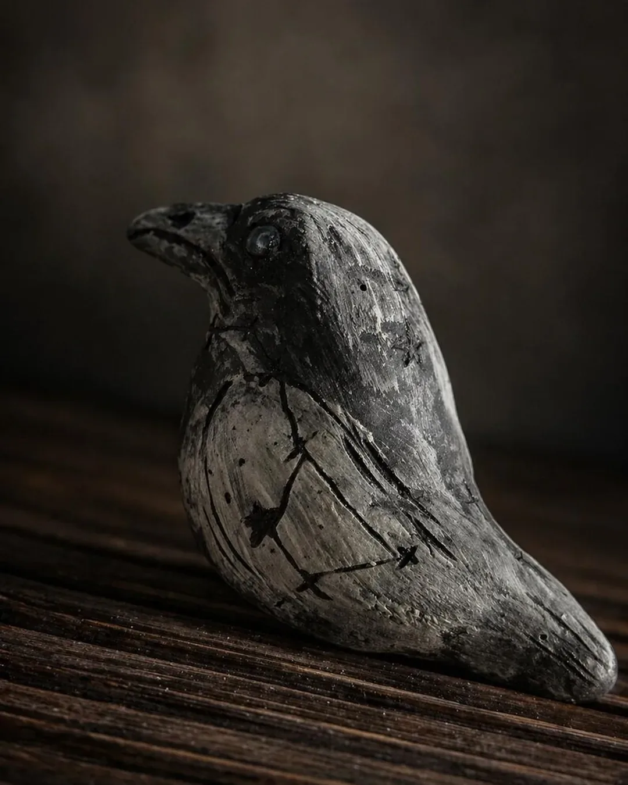
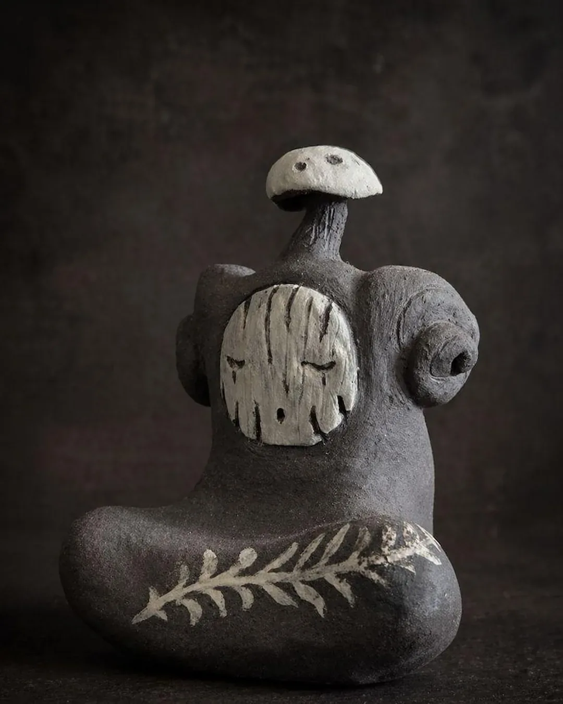
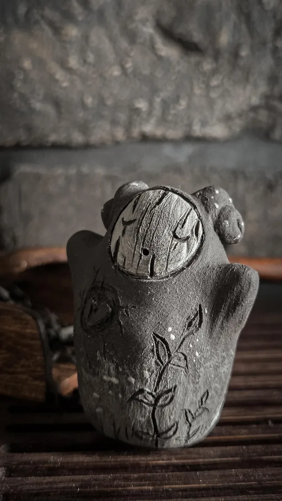

Available
Marl
The beauty collector.
View story →Adopted
Kovu
Spirit of constant flow.
View story →Adopted
Mura
Spirit of the night forest.
View story →Adopted
Solas
Voice of the embers.
View story →Adopted
Pio
Heart of the forest choir.
View story →Adopted
Kitsune
Mischievous nine-tailed fox.
View story →Adopted
Pip
The silent perch.
View story →Adopted
Nox
The star-sleeper.
View story →Adopted

Koda
The root-dreamer.
View story →Adopted

Vesper
Small raven of the night sky.
View story →Adopted

Bracken
Woodland mushroom spirit.
View story →Adopted

Hob
A little house spirit.
View story →…and many more live in my Etsy shop.
All tea spirits on Etsy →
All tea spirits on Etsy →